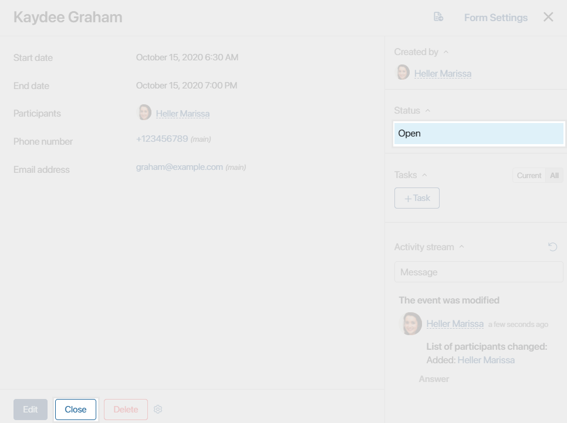
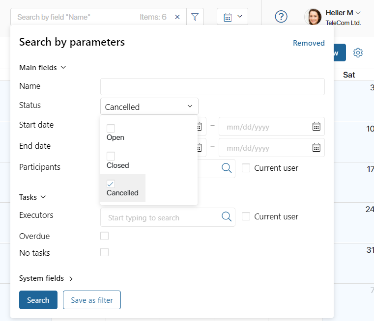
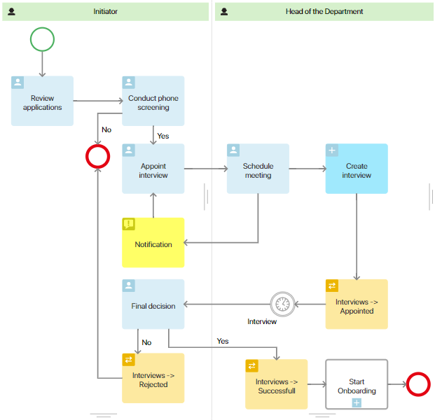
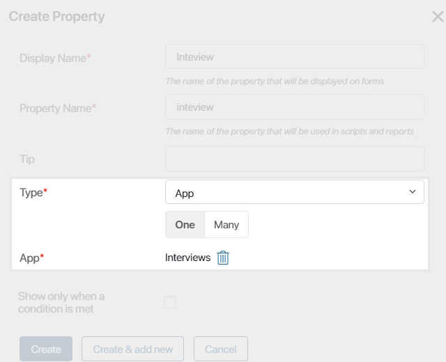
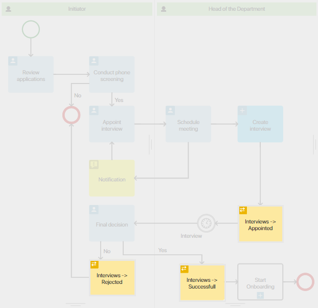
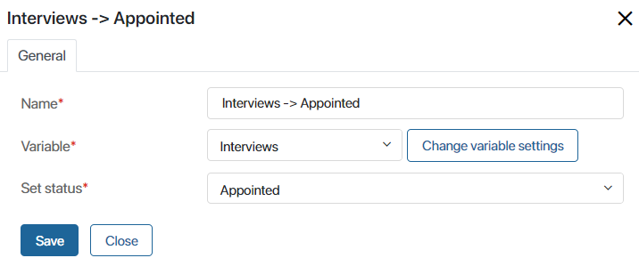

Statuses increase the readability of the calendar and allow you to quickly navigate across scheduled events. If you have several appointments in your workspace calendar, you can sort them by the Open, Canceled, Closed statuses, and quickly find the right event.
Events acquire new statuses either automatically within a business process, or users change them on the event page. Below we will describe both options.
Set up event statuses and allow users to change them
By default events in a workspace calendar have two statuses: Closed and Open. When somebody creates an event it acquires the Open status. To change the status, open the event page and click Close at the bottom of the window.

After that, the status will change and the event will appear crossed out in the calendar.
You can also create your own statuses for workspace calendars:
- Click the gear icon next to the calendar name or the current date and select Status Field.
- Enable the Allow changing app status option.
- Set up the statuses by adding new ones or editing the existing ones.
After that, the Change link will appear on event page next to the current status. By clicking on it, users will be able to select a new status from the list. The new status will be displayed on the event page.
Additionally, you can add the Change status button to the event page. To do so, open any event in the workspace calendar and click , then click Add "Change status" button.
To learn more about changing statuses manually, see Status field.
Statuses not only make the calendar easier to read, they also help find events quickly. For example, an HR employee can sort all interviews by the Canceled status. To do tat, in the search bar, click , then click Status. Select the status and click Search.

The calendar will show all interviews with the Canceled status.
Change event statuses automatically
The event statuses can change automatically while executing a business process. Such approach ensures that events timely get relevant statuses, and employees don't get distracted by unnecessary actions.
As an example, let’s consider the Hiring business process. During the process, the recruiter searches for candidates and at some point schedules Interview events that have three possible statuses: Appointed, Rejected, and Successful.
The process looks as follows:

The hiring manager chooses a CV of an applicant and conducts a phone interview.
If the result of the interview is positive, the recruiter will schedule a personal interview. To do this, they indicate the date, time and participant of the meeting, the head of the department for which the candidate is selected.
The head of the department receives a task to approve the date and time of the interview.
As soon as the head of the department approves the time, this event is automatically added to the workspace calendar and assigns it the Appointed status.
Only the participants of this event can view it in their calendars.
Next, the hiring manager invites the candidate to the office for the interview.
If, based on the results of the interview, the candidate approached the position, the process of registering a new employee is launched. In this case, the event status changes to Successful. If the decision was made to refuse the candidate, then the process ends, and the status of the event changes to Rejected.
To configure this business process, create the workspace calendar for Interviews and set up its statues.
Now you need to bind the calendar and the process, i.e. create a new process context variable that will refer to the Interview event.
Note that when working with a calendar, the type of variable to use is always the App type.
In its settings, in the App field select the Interview calendar.

If you want new events to be automatically added to the workspace calendar, use the Create app item activity. The system creates events using the data that the recruiter enters at the previous steps of the process. Thus the day and the time of the interview specified by the user and approved by the head of the department will be automatically added to the new event.
Now you need to add the Manage status activity to the process. It will change the interview status at particular process steps.

Place these activities to those process steps where the event should change its status. Double click on the shape to configure the status settings:

- Select the Interview variable that you created earlier.
- Select the status suitable for the particular point of the process.
To learn more about how to configure status activity, see Manage status.
After you publish the process, the status of the event will change automatically as users perform their tasks.
Found a typo? Select it and press Ctrl+Enter to send us feedback